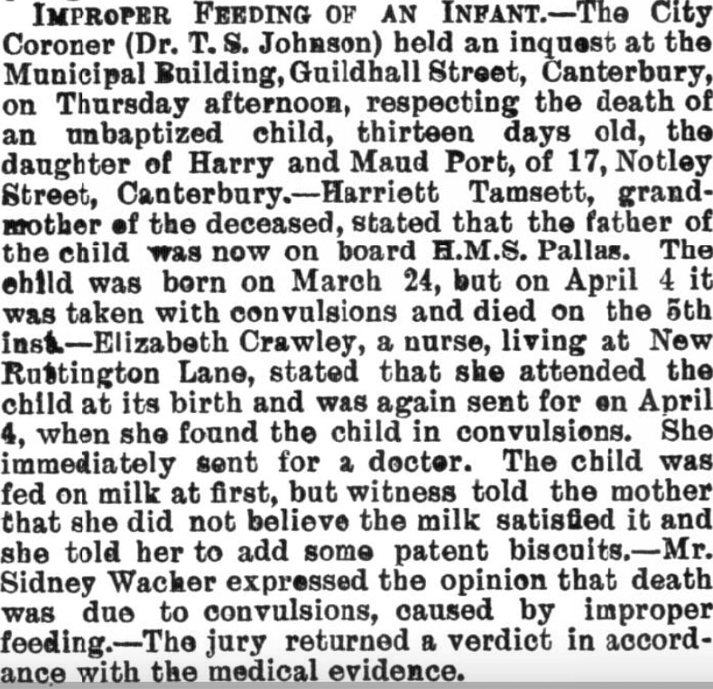
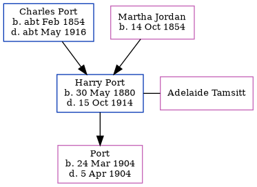

Harry Port 1880 - 1914
[ Home ] | [ Calendar ] | [ Surnames Index ] | [ Errors ] | [ Family History ]The child of Charles Port (a grocer and confectioner) and Martha Jordan (a shop keeper), Harry Port, the third cousin twice-removed on the mother's side of Nigel Horne, was born in Herne Bay, Kent, England on 30 May 18801,2,3, was baptised in Folkestone, Kent, England on 29 Aug 1880 and married Adelaide Tamsitt (with whom he had 1 child, whose first name is unknown) in Canterbury, Kent, England around Nov 19024.
During his life, he was living at Park Terrace, Cheriton, Kent on 5 Apr 18911; and at 5 Somerset Road, Cheriton, Kent in 1914. During 1904, he was serving in the military (hMS Pallas) (hMS Hawk).
He died on 15 Oct 19142.
Parents
- Charles Randle was born c. Feb 1854
- Martha Matilda was born on 14 Oct 1854
Children
- was born on 24 Mar 1904
Citations
- 1891 England, Wales & Scotland Census - Findmypast (was age 10 and the son of the head of the household)
- British Armed Forces And Overseas Deaths And Burials - Findmypast
- England & Wales births 1837-2006 - Findmypast
- England & Wales Marriages 1837-2005 - Findmypast
Media
Canterbury Journal, Kentish Times and Farmers' Gazette - 16 Apr 1904

Folkestone, Hythe, Sandgate & Cheriton Herald - 24 Oct 1914

England Births & Baptisms 1538-1975 - R_885440498
British armed forces and overseas deaths and burials - BMD/D/MARITIME/928256
England & Wales births 1837-2006 - BMD/B/1880/3/AZ/000445/022
England & Wales marriages 1837-2005 - BMD/M/1902/4/AZ/000311/168
Family Tree
Map
Generated by ged2site. Last updated on Jul 3, 2024
Known Issues
Residence record for 1914 contains no citation
Date of death is known, but not place
Location for "military service" on 1904 is empty
Location for "military service" on 1914 is empty